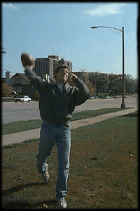

|
|
 |
I was constructed for Internet Underground
in the year 1996. I did not join IU so much as I was
forced into labor. I was programmed as the ultimate
editing machine. However a bug in my system has caused
chronic malfunctioning, thus the cause of infrequent
editorial allusions to Yanni, Kenny G. and Gallagher.
Oh, for a while now.
I'm programmed to hunt down only the best in Web
entertainment for our reader's enjoyment.
Between snacks, I work as Senior Editor for IU. I do nothing else.
Oh, maybe I do a few other things: sing Asia tunes
at local karaoke bars, get picked on by my peers,
watch horribly bad horror movies, write screenplay
sequels to The Mighty Duck, jog (when my weak willed
self allows it), eat cheap vegetarian burritos at Taco
and Burrito House (near the corner of Broadway and
Irving in Chicago), exercise, among other things.
No, that is against my program directive.
The Capt. Kirk Sing-A-Long page. William Shatner's
version of Tambourine Man convinced me that the
digital age had truly arrived.
Censorship of it. FREEDOM!!!!
The better question is, "Am I even prepared for my work?"
Dog person. Cats suck, particularly because I'm allergic to them.
Ever read 101 Uses For A Dead Cat?
named Most Likely to be Senior Editor at IU.
Freaky."
There's so many, where to begin?
I guess I like my little rubbery wrestler dude who enjoys
picking on the other action figures that also reside on my
monitor.
...a Frosty banana snack, accompanied with a bag of
chips and salsa, and a can of Dr. Pepper.
Eudora, Netscape, Word, Girlfriend Tracy.
A 3-way tie:
A Thousand Acres
Another 3-way tie:
Cocoa Pebbles
Most recently:
Ben Fold's Five
When did you join Internet Underground?
How long have you been online?
What do you spend most of your time doing online?
How do you spend offline time?
Do you surf with links underlined?
What was the first site that really caught your attention?
What scares you about the Internet?
What best prepared you for your work?
Are your a dog or cat person? Or perhaps some alternative pet?
"In high school I was...
Describe your favorite monitor decoration/toy?
The ultimate online snack is...?
What applications are usually running on your computer?
What's your favorite book?
King Lear (really a play I suppose)
The Great Gatsby
What's your favorite cereal, and when do you indulge?
Cinammon Toast Crunch
Cookie Crisp
What tunes play while you surf?
Beastie Boys Instrumental
Bim Skala Bim
The Gypsy Kings
Phish